Chi Kung
El Chi Kung (también conocido como Qi gong) es una práctica antigua de origen chino que combina movimientos físicos suaves, respiración controlada y enfoque mental. La palabra "Chi" (o "Qi") significa "energía vital", y "Kung" (o "Gong") se traduce como "trabajo" o "cultivo". Entonces, Chi Kung se refiere al "trabajo de energía" o "cultivo de la energía vital".
Beneficios del Kempo
- Mejora la circulacion y la energia
- Reduce el estres y la ansiedad
- Fortalece el sistema inmunologico
- Trabajo de la energía interna (Chi o Qi)
- Aumenta la flexibilidad y la coordinacion
- Fomenta el equilibrio emocional y mental

| Día | Horario |
|---|---|
| Miercoles | 20:00 - 21:00 |
Kempo
El Kempo Chino es un arte marcial completo que va más allá de la autodefensa. No solo fortalece el cuerpo, sino que también cultiva la mente y el espíritu, promoviendo un equilibrio entre la fuerza física, la energía interna y el control emocional.
Beneficios del Kempo
- Mejora de la condición física
- Aumento de la autoconfianza
- Reducción del estrés
- Trabajo de la energía interna (Chi o Qi)
- Disciplina y autocontrol
- Desarrollo de habilidades de autodefensa
 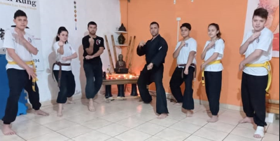
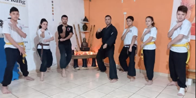

Kempo adultos
| Día | Horario |
|---|---|
| Martes | 20:00 - 22:00 |
| Jueves | 20:00 - 22:00 |
Kempo Niños
| Día | Horario |
|---|---|
| Miercoles | 18:00 - 19:00 |
| Viernes | 18:00 - 19:00 |
Yoga
El yoga es una práctica antigua que combina posturas físicas, ejercicios de respiración, meditación y principios filosóficos. Tiene como objetivo promover la salud física, mental y espiritual.
Beneficios del Yoga
- Mejora de la flexibilidad
- Mejora circulación y respiración
- Fortalecimiento físico
- Reducción del estrés y mejor conexión emocional
- Salud cardiovascular
- Alivio del dolor
- Mejora del enfoque y la concentración
- Estabilidad emocional
- Autoexploracion
 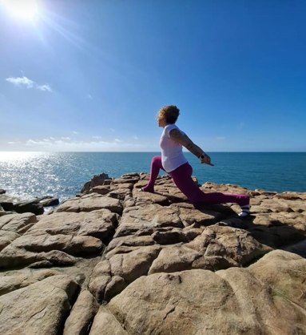
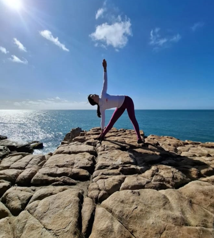
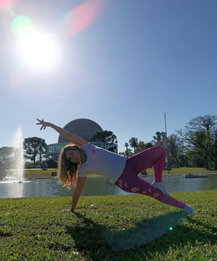
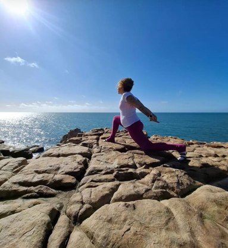
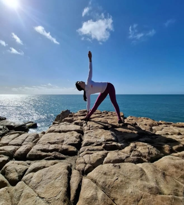
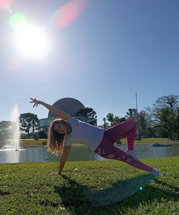
| Día | Horario |
|---|---|
| Lunes y Miercoles | 19:00 - 20:00 |
| Martes y Jueves | 08:00 - 09:00 |
| Martes y Jueves | 17:00 - 18:00 |
Yoga Deportivo
El yoga deportivo es una variante creativa y expresiva del yoga que combina la conciencia corporal con la estética del movimiento. Es ideal para quienes buscan una práctica que, además de los beneficios físicos, les permita explorar su creatividad y expresarse emocionalmente.
Beneficios del Yoga Deportivo
- Aumento de la creatividad
- Mejora de la coordinación y el equilibrio
- Fortalecimiento físico
- Reducción del estrés y mejor conexión emocional
- Expresión emocional y autoestima
 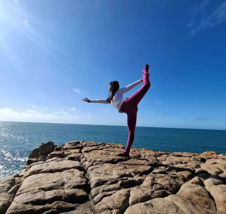
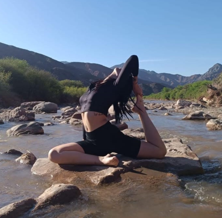
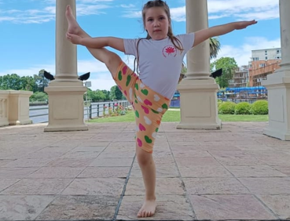
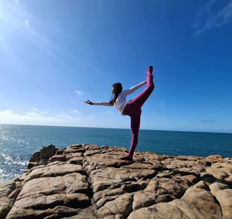
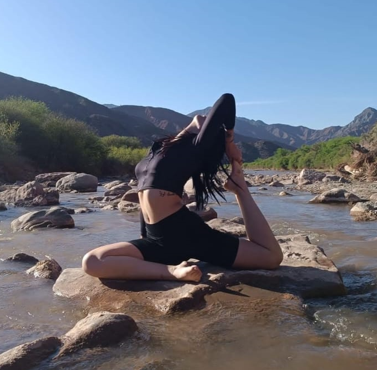
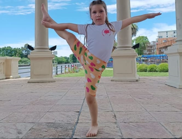
| Día | Horario |
|---|---|
| Jueves | 18:00 - 20:00 |
| Sabado | 11:00 - 13:00 |